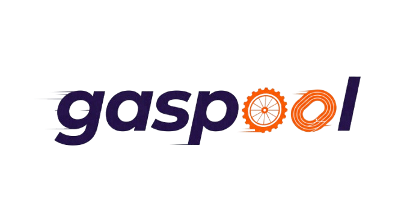

Record aktivitas multi-mode
Rekam ride, run, walk, dan hike dengan jarak, waktu bergerak, speed, pace, elevasi, suhu, map detail, dan GPX export.
Gaspool adalah tracker aktivitas mandiri untuk gowes, lari, jalan, dan mendaki: rekam GPS, bikin rute, dengar panduan suara, pantau peleton, lalu flex hasilnya sebagai gambar atau video tanpa bergantung pada aplikasi kebugaran tertutup.

Yang Sudah Bisa Dipakai
Fitur di bawah disusun dari kemampuan Gaspool yang sudah ada di app: dashboard, tracker, route planner, radar, dan public profile.
Rekam ride, run, walk, dan hike dengan jarak, waktu bergerak, speed, pace, elevasi, suhu, map detail, dan GPX export.
Buat rute dari start, tujuan, dan waypoint. Cari lokasi via geocoding, generate rute ORS, lalu simpan ke route library.
Panduan suara dari Web Speech API, prompt belokan, ulangi instruksi, deteksi off-route, dan reroute ke tujuan yang sama.
Mode stealth meminimalkan render UI saat HP masuk kantong, tetap menjaga GPS, TTS, wake lock, dan blackbox session.
Buat room peleton, bagikan link radar keluarga, sinkronkan posisi rider via KV, dan kirim voice radio antar peserta.
Session resume memakai localStorage dan IndexedDB. Kalau tab mati, prompt resume menampilkan jarak, durasi, titik GPS, route, dan status privasi.
Ekspor kartu statistik, share map card, cinematic route recap video, dan peleton recap untuk pamer hasil gowes dengan gaya Gaspool.
Kelola rute tersimpan, rename atau hapus rute, buka ulang route planner, dan lihat heatmap dari riwayat aktivitas.
Aktivitas default private. Rider bisa memilih PUBLIC/PRIVATE, sementara profil publik hanya menampilkan aktivitas yang diset public.
Flow Harian
Gaspool dirancang untuk dipakai di jalan: sedikit lihat layar, lebih banyak dengar suara, dan tetap punya data lengkap setelah selesai.
Cari lokasi, tambah waypoint, generate rute, atau pakai rute yang sudah tersimpan.
Tracker memuat route overlay, GPS dot, recenter, tombol suara, stealth mode, dan privacy toggle.
TTS memberi arahan belokan. Kalau keluar jalur, Gaspool bisa memberi status off-route dan opsi reroute.
Aktivitas masuk D1/R2, bisa public atau private, lalu diekspor sebagai GPX, image card, atau video recap.
Transparansi dan Atribusi
Gaspool tidak menyembunyikan ketergantungan teknisnya. Beberapa layanan berjalan di server, beberapa berjalan langsung di browser rider.
Runtime serverless utama untuk Hono app, dashboard, tracker, public profile, dan API Gaspool.
Framework web TypeScript yang menangani route, API, auth, dashboard, tracker, dan public profile.
Database untuk user, ride metadata, statistik, planned route metadata, dan visibility activity.
Object storage untuk polyline route JSON, planned route JSON, dan audio radio peleton.
Storage sementara untuk chunk upload, live radar peleton, dan metadata radio.
Proteksi anti-bot di flow autentikasi, dengan secret disimpan di Worker secret.
Directions V2 untuk generate rute dan geocoding search untuk mencari lokasi.
Data peta dan basemap gelap yang dirender sebagai kanvas map Gaspool.
Library peta interaktif untuk dashboard, route planner, tracker, radar, heatmap, dan detail activity.
API cuaca untuk mengambil suhu berdasarkan koordinat aktivitas.
Mengubah kartu statistik atau map menjadi gambar untuk fitur flex image.
Opsional, hanya untuk user yang ingin sinkronisasi riwayat aktivitas dari Strava.
Hash password akun lokal sebelum disimpan.
Geolocation, IndexedDB, Web Speech API, Wake Lock, MediaRecorder, Canvas, Blob, File, Clipboard, dan Web Share bila tersedia.
Tooling build, deploy, dan type generation untuk Cloudflare bindings.
Jujur Soal Webapp
Gaspool adalah webapp, bukan aplikasi native. Jadi ada batasan dari browser dan OS, tapi beberapa mitigasi sudah disiapkan agar tetap layak dipakai di jalan.
Android, iOS, dan mode hemat baterai bisa membatasi tracking saat layar mati. Gaspool memakai Wake Lock, stealth mode, dan resume session untuk mengurangi risiko data hilang.
Blackbox lokal menyimpan titik GPS, tapi route generation, radar peleton, radio, dan upload tetap butuh internet. Untuk ride panjang, tes rute pendek dulu dan hindari force-close browser.
Panduan suara memakai Web Speech API bawaan browser. Gaspool memilih suara Indonesia jika tersedia, tapi kualitas dan pilihan voice tetap mengikuti perangkat user.
Cuaca, gedung, posisi HP di tas, dan battery saver bisa membuat track loncat. Pakai HTTPS, izinkan lokasi, matikan optimasi baterai ekstrem, dan aktifkan stealth mode saat butuh hemat daya.
iOS dan Safari cenderung lebih ketat soal background task, audio, dan wake lock. Untuk pengalaman paling stabil, Gaspool lebih direkomendasikan di Android Chrome/PWA.
Gaspool memakai IndexedDB blackbox, resume prompt, dan upload bertahap agar sesi lebih tahan banting. Tetap cek hasil setelah finish sebelum menutup browser sepenuhnya.
Privasi dan Kendali
Karena ini tracker lokasi, Gaspool memilih posisi konservatif: aktivitas baru private, public profile hanya menampilkan yang memang kamu buka.
FAQ
Ringkasan singkat untuk pengunjung baru yang mencari alternatif Strava, GPS tracker mandiri, atau aplikasi gowes self-hosted.
Gaspool adalah aplikasi GPS activity tracker self-hosted dan alternatif Strava versi DIY untuk gowes, lari, jalan, dan mendaki.
Ya. Gaspool memiliki route planner dengan pencarian lokasi, OpenRouteService routing, route library, dan voice navigation.
Ya. Gaspool dirancang untuk self-hosted deployment di Cloudflare Workers, D1, R2, KV, dan Turnstile.
Untuk Yang Suka Melalangbuana
Gaspool cocok untuk rider yang ingin data tetap di rumah sendiri, tapi masih butuh route planner, panduan suara, radar peleton, dan hasil akhir yang layak dipamerkan.